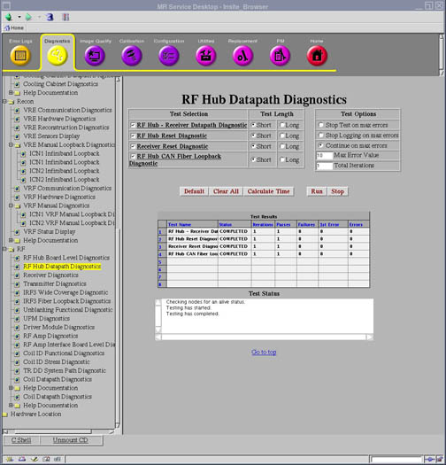

Proprietary to General Electric
Direction 5670000, Rev# 1
Optima MR450w 1.5T Service Methods
Module Version 4.0, Version Date 11/4/09
Proprietary to General Electric |
Diagnostics >> System Function >> RF >> RF Hub Datapath Diagnostics
Diagnostics >> Hardware Location >> Magnet Room >> RF Hub Datapath Diagnostics
Illustration 1: RF Hub Datapath Diagnostics

The purpose of this test is to diagnose problems with the CFB - RF Hub fiber cables.
RF Hub
RRX Module 1
CFB
Interconnects
There are no requirements.
For further information, refer to the Interactive Block Diagrams.
Click [Calculate Time] to get an estimate of the time it will take to run the selected diagnostics.
Click [Run] to initiate test.
| NOTE: | The Test Options settings should not be changed from their default settings unless instructed to do so by a GE Healthcare engineer. There are very few circumstances when these settings ever need to be changed. |
If the diagnostic fails, either additional error messages will isolate the failure, or the field engineer should check the CAN transmit and receive fibers from the CFB to the RF Hub.